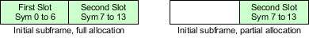
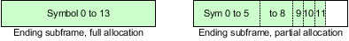
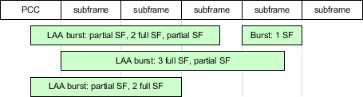

LAA is a carrier aggregation feature using unlicensed spectrum for the SCC DL. The same spectrum can be used by WLAN.
To use LAA in the LTE signaling application, you need option R&S CMW-KS514. The feature is only implemented on the SUA, not on the SUW.
- "Type 1" = normal FDD operation
- "Type 2" = normal TDD operation
- "Type 3" = LAA operation mode
To put an SCC into LAA operation mode, select the duplex mode TDD and band 46. The frame structure setting changes to "Type 3". If you select the user-defined TDD band, you can set "Type 3" manually.
3GPP defines many restrictions for LAA.
- Only SCC DL allowed (no SCC UL, R13 restriction)
- Only normal CP (no extended CP)
- Only 20 MHz channel bandwidth in the current software version (3GPP allows also 10 MHz bandwidth)
- Transmission modes TM 1 to TM 4, TM 8, TM 9
LAA allows downlink transmissions in any subframe. There can be partially allocated subframes at the beginning and at the end of a transmission burst. Between two downlink bursts, there is no signal transmission at all. Only discovery reference signals (DRS) can be transmitted between bursts, with a minimum periodicity of 40 ms. There is no PBCH on frame structure type 3 cells.
The first subframe of a burst is also called initial subframe. The last subframe of a burst is also called ending subframe. For initial subframes with partial allocation, you find the term PIPS in the user interface. For ending subframes with partial allocation, you find the term PEPS.
- Each burst contains at least one subframe with full allocation.
So a burst with only one subframe has full allocation. In a burst with two subframes, only one subframe can have partial allocation. - Initial subframes have full allocation or the second half is allocated.

- Ending subframes have full allocation or the first 6, 9, 10, 11 or 12 OFDM symbols are allocated.

The following figure shows some examples of possible LAA bursts, relative to the PCC subframe positions.

The subframe allocation is defined via the scheduling settings. The scheduling types supported for LAA are described in the following sections.